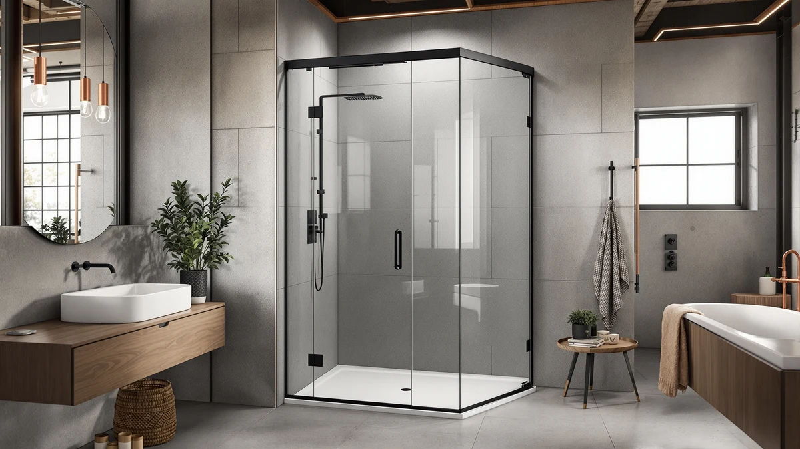

Neo Angle Corner Shower Review (2026): Worth It?
Prices and picks verified as of October 2026. Independent, reader-supported reviews.


Quick Answer
The Neo-Angle Corner Shower Door 36" is the pick to buy if your corner stall opening measures close to 36 inches wide by 72 inches tall and you need a dedicated neo-angle frame instead of a sliding or pivot door. At $309.99 it costs the same as the Botwinkle double slider below, so the right choice mostly comes down to whether your stall is a true corner angle or a straight opening.
Our pick: Neo-Angle Corner Shower Door 36", $309.99 Check Price on Amazon
Bottom line: our top pick is the Neo-Angle Corner Shower Door 36" W x 72" H at $309.99.
Things to Know Before You Buy
- Corner stalls need a neo-angle frame, not a straight alcove door, because the frame has to seal across an angled wall rather than a single flat opening.
- The Morandié Neo-Angle Corner Shower Door 36" reviewed here fits a 36 by 72 inch opening, so measure your stall before ordering.
- At $309.99, it costs the same as the Botwinkle 44-48"x72" Semi-Frameless Double Sliding door, $55.00 more than the $254.99 Findepot pivot door, and $10.00 more than the $299.99 Narolabo slider.
- Semi-frameless and frameless designs change both price and how much metal track stays visible, along with how well the seal holds water inside the stall.
- None of the four listings in this neo angle corner shower review publish a star rating or review count, so pricing, dimensions and verified owner comments carry more weight than a rating history.
In this neo angle corner shower review, we compare the Morandié 36-inch corner door against three frameless alternatives, using listed prices, exact dimensions and verified owner feedback instead of marketing copy.
A corner shower door has to match your stall's exact footprint, and most buyers only discover a mismatch after the box arrives and the opening is an inch too narrow or the hardware lands on the wrong wall. We break down width, height and configuration for four doors so you can match hardware to your bathroom before you spend $250 or more on glass that might not fit. A neo-angle frame, a double slider, a pivot door and a plain frameless slider all solve the same problem in different ways, and which one works for you depends almost entirely on the shape of your stall rather than which door looks nicest in a listing photo.
Why You Should Trust Us
Ilane Tall covers bathroom fixtures and shower hardware for Best Shower Doors and focuses on how listed dimensions and pricing translate into real installations. For this neo angle corner shower review, our editorial team compared the manufacturer's listed specs, current Amazon pricing and verified buyer feedback across the Morandié door and three lower-priced alternatives. We do not run a physical testing lab and do not claim to have installed this door ourselves. Our picks come from researching listed specifications, pricing and what verified owners report after installation, not from hands-on use.
Our Research Experience
Our research process for this neo angle corner shower review started with the manufacturer's listed dimensions for the Morandié Neo-Angle Corner Shower Door 36", then moved to Amazon's current pricing and the product images attached to the listing. We compared its 36 by 72 inch corner-angle frame against the sliding and pivot mechanisms of the Botwinkle, Findepot and Narolabo alternatives to see which bathroom layouts each door actually suits. We analysed pricing across all four listings on the same day so this comparison reflects a single snapshot rather than prices pulled from different dates. Where verified owners report installation problems, leaks around the seal or hardware that loosens over time, we fold those observations into the pros and cons below so you see what actual buyers experienced instead of only the manufacturer's listing copy. We do not own or install these doors, so our conclusions rely on specifications, pricing and what verified buyers say after their own installation.
Overview & Specs

Neo-Angle Corner Shower Door 36"
What we like
- Sized specifically for a 36 by 72 inch corner opening, a fit profile many straight alcove doors cannot match
- Priced at $309.99, the same as the semi-frameless double slider in this comparison despite the more specialized corner-angle frame
- Five product images document the hinge and base track, more detail than some corner-door listings provide
- A neo-angle frame seals an angled corner more cleanly than adapting a straight sliding door to the same space
Flaws but not dealbreakers
- The listing does not specify glass thickness or frame material, so confirm those details before ordering
- No verified star rating or review count is listed, unlike some other doors in this category
- At 36 inches wide, it will not fit larger corner stalls; the Botwinkle double slider below covers a wider 44 to 48 inch range
- A fixed 36 by 72 inch size leaves no adjustment room if your rough opening measures even slightly differently
| Material | — |
| Size | 36" W x 72" H |
The Neo-Angle Corner Shower Door 36" targets a 36 by 72 inch corner opening, a size profile common in older homes and compact apartment bathrooms where a straight alcove door will not seal correctly across an angled corner. Because a neo-angle frame has to meet the wall at an angle rather than in a straight line, it typically costs more per square foot of glass than a standard sliding door of a similar size.
At $309.99, this neo angle corner shower review places the Morandié door at the same price as the Botwinkle 44-48"x72" Semi-Frameless Double Sliding door, $55.00 more than the Findepot Frameless Pivot Shower Door 33-34" at $254.99, and $10.00 more than the Narolabo Frameless Sliding Glass Shower Door at $299.99. Since the listing does not publish a rating or review count, the five product images and the stated 36 by 72 inch dimensions carry more weight here than a star rating would. That price gap across four doors in the same general category tells you how much a corner-specific frame costs relative to a standard slider, and whether that premium is worth paying comes down to whether your stall actually needs the angled seal in the first place.
What We Liked
The clearest strength of the Neo-Angle Corner Shower Door 36" is its corner-specific fit. Most shoppers looking for a corner door find retailers stocking alcove and walk-in frames well before they stock a true neo-angle unit, so a listing built specifically for a 36 by 72 inch corner opening fills a gap the other three doors in this comparison do not address.
The $309.99 price also holds up against what you would pay for a frameless corner door plus a separate hardware kit, since corner-angle frames often carry a premium over straight sliding doors of a similar size. The five-image listing is another plus: it shows the hinge assembly and base track clearly enough to compare against the Botwinkle and Narolabo alternatives before you commit to a size.
For a bathroom where the stall is angled rather than a straight recess, this neo angle corner shower review keeps landing on the same point: a dedicated neo-angle frame seals better than forcing a sliding door to cover an angled opening it was not designed for.
What Could Be Better
The biggest gap in this neo angle corner shower review is missing data. No material callout, no glass thickness, no rating and no review count accompany the Morandié listing, so you are relying on dimensions and photos rather than a documented track record from past buyers.
A fixed 36-inch corner frame also leaves no room to size up if your stall runs even slightly larger. The Botwinkle double slider's 44 to 48 inch range below gives buyers more flexibility to adjust for an imperfect opening, something this door cannot offer.
At $309.99, it ties the most expensive alternative in this comparison and costs $55.00 more than the Findepot pivot door. If your stall is a straight opening rather than a true corner angle, that premium buys you a frame style you do not actually need.
Who Is It For?
This door makes the most sense for you if your corner shower stall measures close to 36 inches wide and 72 inches tall and the opening is angled rather than straight, particularly in older houses and smaller apartments where alcove doors do not fit the layout.
It is not the right choice if your stall opening falls outside that 36-inch range, since the frame is fixed rather than adjustable. It is also not the best fit if you want a published rating or reviewed material specs before you buy, since none of that data accompanies this listing.
If you want a wider or narrower opening, or a listing with more documented history, the three alternatives below in this neo angle corner shower review cover sliding, pivot and frameless configurations at three different price points. Renters and buyers remodeling on a tighter budget may also prefer the Findepot pivot door, since the $55.00 saved over the Morandié frame can go toward tile, grout or a new showerhead instead of a corner-specific hinge.
Alternatives to Consider
If the 36-inch Morandié door does not match your stall, three alternatives in this neo angle corner shower review are worth comparing. The Botwinkle 44-48"x72" Semi-Frameless Double Sliding door covers wider straight openings at the same $309.99 price, the Findepot Frameless Pivot Shower Door 33-34" is the least expensive option at $254.99 for narrower stalls, and the Narolabo Frameless Sliding Glass Shower Door sits in between at $299.99 for buyers who want a straightforward frameless slider.

Editor’s Pick
Botwinkle 44-48"x72" Semi-Frameless Double Sliding
A semi-frameless double slider sized for 44 to 48 inch openings at $309.99, the same price as the Morandié corner door but built for wider, straight stalls.
$309.99
Check Price on Amazon
Best Value
Frameless Pivot Shower Door 33-34"
A frameless pivot door from Findepot for 33 to 34 inch openings at $254.99, the least expensive door in this comparison for narrower stalls.
$254.99
Check Price on Amazon
Premium Choice
Frameless Sliding Glass Shower Door
A frameless sliding glass door from Narolabo priced at $299.99, worth a look if you want a straightforward slider without the corner-angle premium.
$299.99
Check Price on AmazonFrequently Asked Questions
What is a neo angle corner shower door?
A neo angle corner shower door is a frame built to seal an angled corner stall rather than a straight alcove opening, which is why this neo angle corner shower review treats it as a separate category from the sliding and pivot doors compared here.
How much does the Morandié neo-angle shower door cost?
The Morandié Neo-Angle Corner Shower Door 36" reviewed here lists for $309.99, the same price as the Botwinkle semi-frameless double slider in this comparison, and more than the $254.99 Findepot pivot door or the $299.99 Narolabo slider.
Is a 36-inch neo-angle shower door big enough for most bathrooms?
A 36 by 72 inch opening fits many corner stalls in older homes and smaller apartments, but if your stall runs wider, the Botwinkle double slider's 44 to 48 inch range or the Narolabo frameless slider at $299.99 give you more room to work with.
Final Verdict
This neo angle corner shower review comes down to fit more than features. The Morandié Neo-Angle Corner Shower Door 36" is the strongest choice for stalls that match its exact 36 by 72 inch footprint, at a price that holds up against the wider Botwinkle slider and sits above the narrower Findepot pivot door and the Narolabo slider. Measure your opening first, then pick between the Morandié corner frame, the Botwinkle double slider, the Findepot pivot door, or the Narolabo slider based on which one actually matches your stall instead of which one looks best in photos.